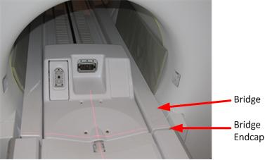
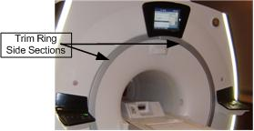
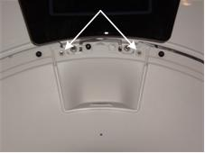
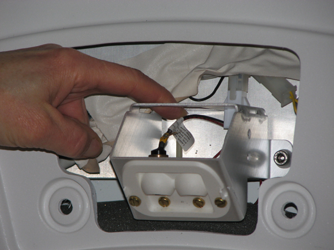

Operating Documentation
Direction 5670006, Rev# 1
Discovery MR750w GEM Service Methods
Module Version 6.0, Version Date 8/4/11
Operating Documentation |
| Required Persons | Preliminary Reqs | Procedure | Finalization |
|---|---|---|---|
| 1 | Not Applicable | 15 minutes | Not Applicable |
| Item | Qty | Effectivity | Part# | Manufacturer | |
|---|---|---|---|---|---|
| Non-Ferrous Allen Wrench Set | 1 | - | - | ||
| Non-Ferrous Flat Blade Screwdriver | 1 | - | - | ||
Verify that the bridge is centered left to right. If not, center the bridge. If needed, in the Bridge and Longitudinal Drive Belt Replacement procedure, refer to the “X-Direction Bridge Alignment” and the “Z-Direction Bridge Alignment” sections.
Press the Alignment button on the control panel to turn on the laser light.
Check for proper alignment. The axial light should align with the joints of the bridge endcap and bridge on each side of the bridge and the sagittal light should align with the middle of the LPCA and the middle of the table. If alignment is correct, you are done with this procedure. Otherwise, continue with the steps that follow.
Illustration 1: Proper Alignment

Remove the two snap-in trim ring side sections.
Illustration 2: Trim Ring Side Sections

For an In-Room Display, remove the laser light cover by removing the two (2) screws shown. The cover is held in place by two poppers (one in each lower corner of the laser cover) and snaps off.
Illustration 3: Remove Laser Cover

Change the positioning of the alignment lights by moving the joystick. Adjust the alignment via the joystick so that the axial light (x-axis) is aligned to the bridge and endcap joints on both sides of the bridge and the sagittal light (z-axis) is centered down the middle of the bridge. See Illustration 1 for proper alignment.
| NOTE: | There is only one joystick to adjust the laser light. |
Illustration 4: Adjusting Laser Lights With Single Joystick

Replace the laser light cover.
Replace the trim ring as appropriate.
Perform DQA Calibration to calibrate isocenter following the instructions in DQA II Tool and Troubleshooting.
If this is just an adjustment and no further calibrations are needed, then perform a SAVEINFO to save current system calibrations.